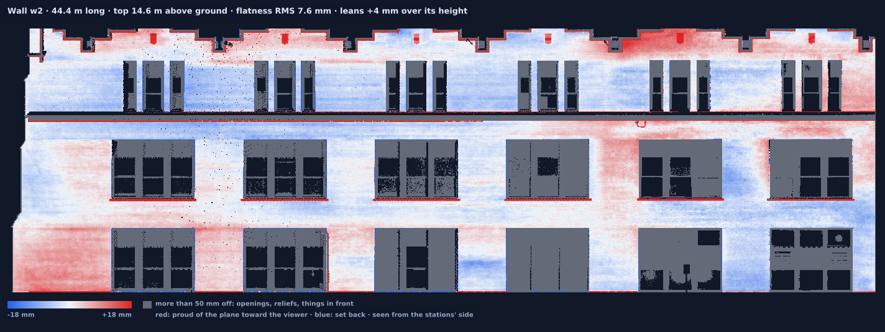
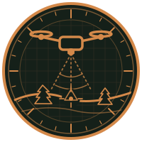
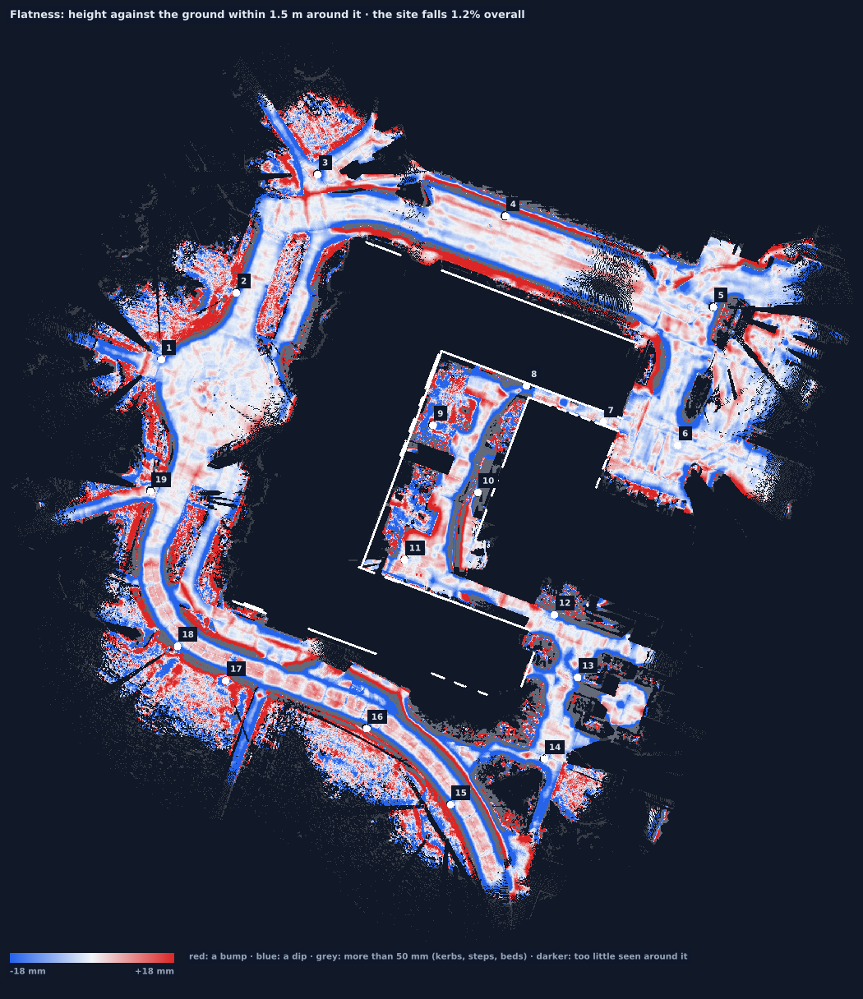
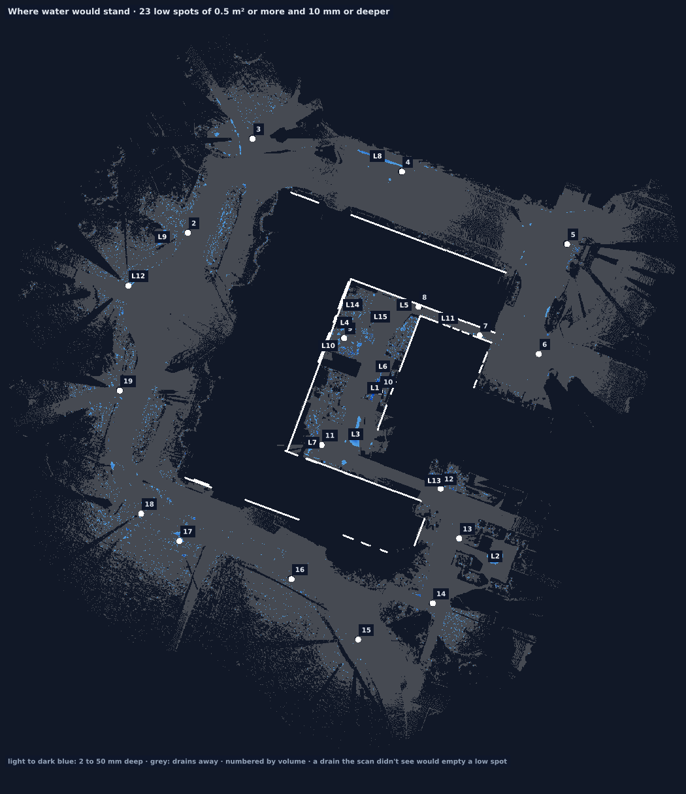
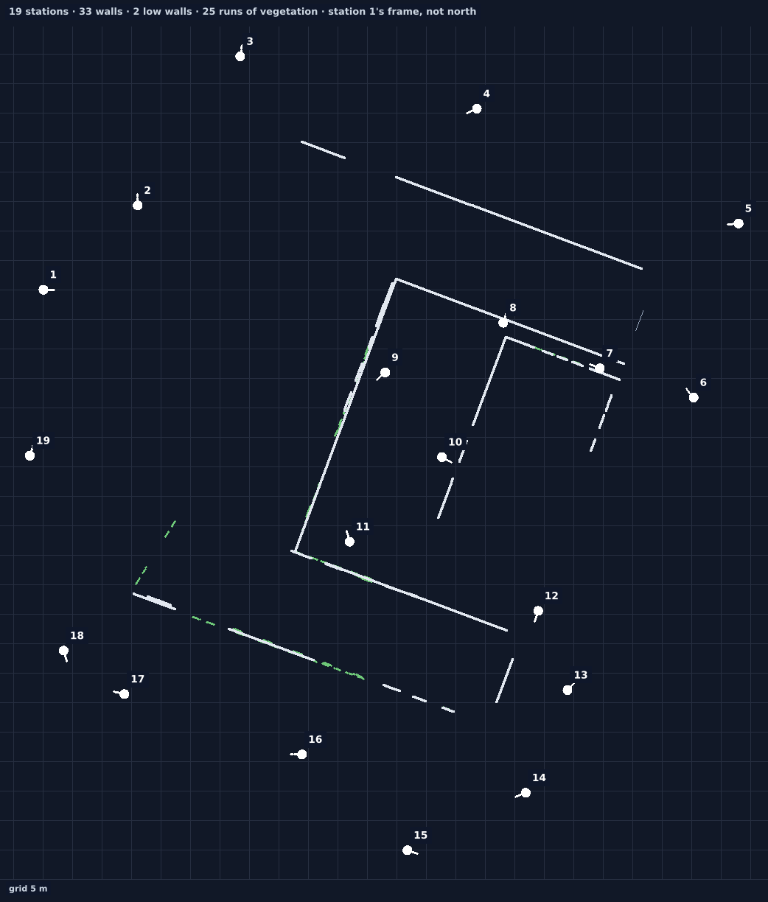
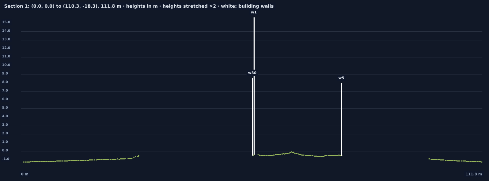
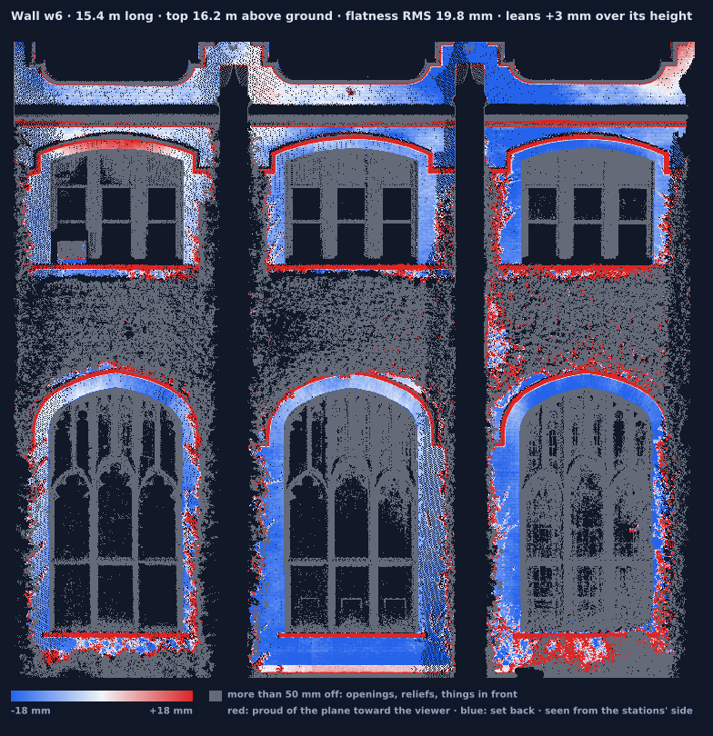
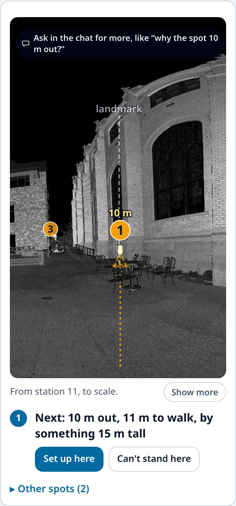

Wall plumb and flatness
Is the long facade plumb, within a quarter inch in ten feet?
4.1 mm over 14.6 m
From a wall seen along 85% of its length. Of the 33 walls here, 5 answered this question and 28 did not.
Read the visit
North Idaho LabsYou say the job once. Everything after that follows from it.
The four answers below come from a demonstration scan of one building. Each one says what it is worth, and how much of the building it could not answer.

Is the long facade plumb, within a quarter inch in ten feet?
4.1 mm over 14.6 m
From a wall seen along 85% of its length. Of the 33 walls here, 5 answered this question and 28 did not.
Read the visit

Where will water stand in this lot?
23 places, each at least half a square metre and 10 mm deep
Read the visit
Give me the whole site in one map.
19 stations, one map
The stations tie together within 22 mm. How much of each wall they saw is a separate number, and it runs from 29% to 100%.
Read the visit

How tall is the building, and how does the ground fall?
16.2 m from the ground at its foot to the top of the wall
That wall is 61% window and was seen along 60% of its length. It gives a height. It does not give a plumb number.
Read the visitSo what did you not get?
On this building the scan answered the plumb question on 5 of the 33 walls. The other 28 are in the report with their picture and their coverage, and no plumb figure.
The rule is written into the report: a wall less than 80% covered, shorter than 4 m, or rougher than 15 mm RMS against one plane gives the reason instead of a number. Every wall that did answer had been seen along at least 82% of its length. Across all 33, coverage runs from 29% to 100%.
The refusals sit in the report beside the answers rather than being left out of it. That is the part you can act on: it tells you which wall to go back for.
Where do I stand next?
You start with a mission. The agent proposes a first scan. After that scan, the scanner's own points say where to stand next: the spot is drawn on the view you already have, with the tripod the size it will be there.
What you see here is a replay of the building: a crew set its stations, and the spots were planned afterwards from each station's own points.
